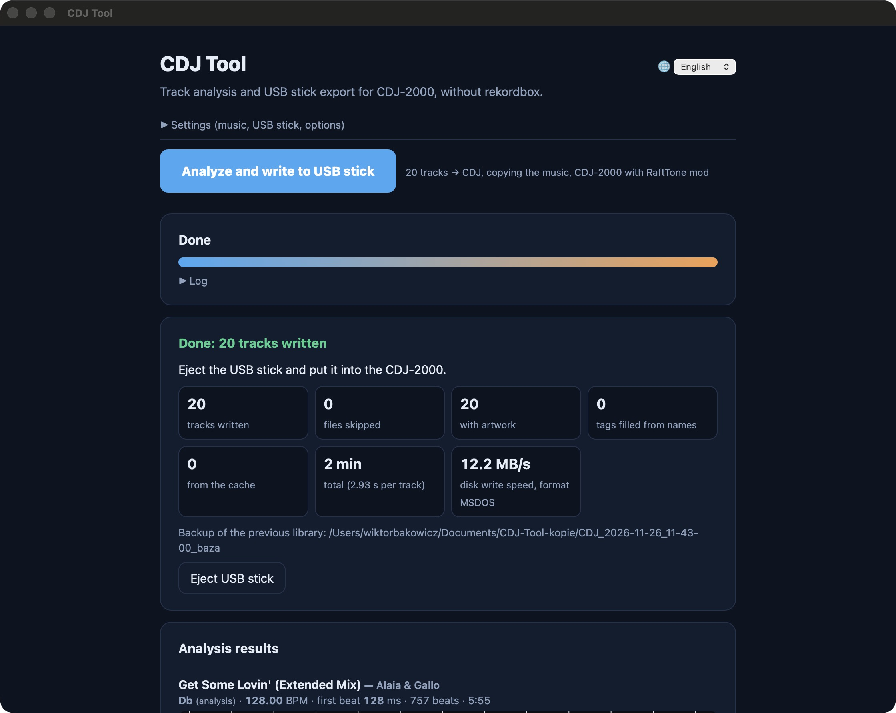
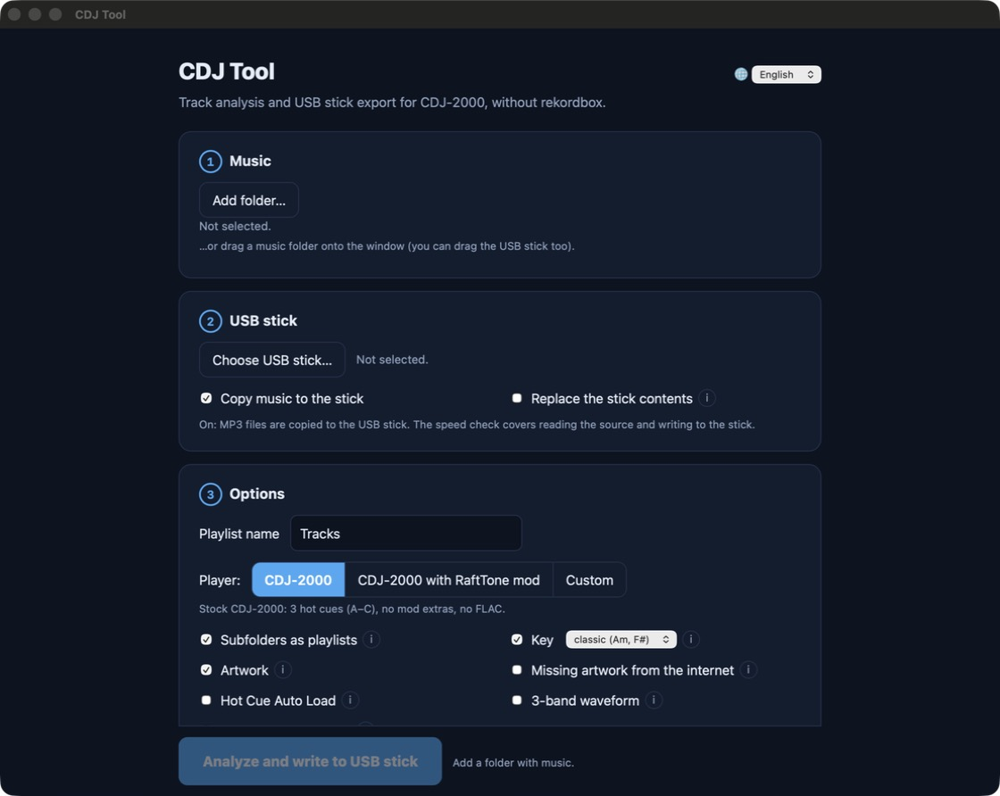
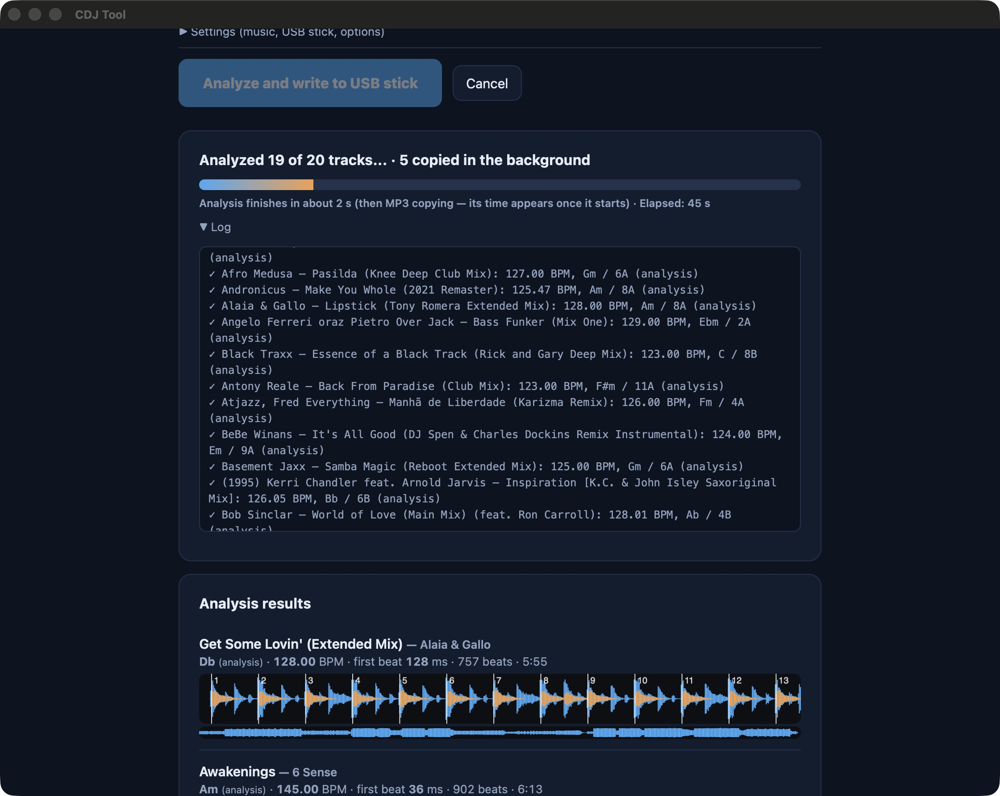

CDJ Tool analizuje Twoje utwory (BPM, siatkę beatów, waveformy, cue) i zapisuje pendrive, który CDJ-2000 wczytuje jak eksport z rekordboxa. Działa offline, na Macu i w Windowsie. CDJ Tool analyses your tracks (BPM, beat grid, waveforms, cue points) and writes a stick that the CDJ-2000 loads like a rekordbox export. It works offline, on a Mac and on Windows.
Pobierz najnowszą wersjęDownload the latest version Kod źródłowySource codeDarmowy, bez konta i telemetrii. Wersja 1.0.10. Mac z Apple Silicon, Mac z Intelem, Windows 10/11 (64-bit). Free, no account, no telemetry. Version 1.0.10. Apple Silicon Mac, Intel Mac, Windows 10/11 (64-bit).

Aplikacja została napisana razem z tym modem: sześć hot cue (banki A–F), waveform 3-pasmowy i siatka, którą mod szanuje.The app was built with this mod in mind: six hot cues (banks A–F), the 3-band waveform and a grid the mod respects.
Obsługuje MP3, AAC, WAV i AIFF. Na zwykłym firmware autor nie testował jeszcze wszystkich funkcji. Raporty z Twojego sprzętu są mile widziane.Supports MP3, AAC, WAV and AIFF. The author has not yet tested every feature on stock firmware. Reports from your hardware are welcome.
BPM, siatka beatów, waveformy, tonacja i cue. Długie sety do 3 godzin, z siatką dynamiczną.BPM, beat grid, waveforms, key and cues. Long sets up to 3 hours, with a dynamic grid.
Przesuwasz siatkę, ustawiasz „1” taktu i hot cue, a poprawka zostaje na komputerze przy kolejnych zapisach.Shift the grid, set the bar's "1" and hot cues. Your correction stays on the computer for the next writes.
Siatki i cue z rekordboxa (XML), Traktora i Serato zamiast własnej analizy. Traktor i Serato to wersja testowa.Grids and cues from rekordbox (XML), Traktor and Serato instead of the app's own analysis. Traktor and Serato are a test version.
Okładki z tagów, playlisty odwzorowujące Twoje foldery, uzupełnianie tagów z nazw plików.Artwork from the tags, playlists that mirror your folders, tags filled from file names.
Test dysku przed startem, jasny komunikat, gdy pendrive się odłączy, i kopia poprzedniej biblioteki przy zastępowaniu.A disk test before the run, a clear message if the stick disconnects, and a backup of the old library when replacing it.
Polski, English, Deutsch, Français, Español, Italiano. Interfejs, dziennik i komunikaty o błędach.Polish, English, German, French, Spanish, Italian. Interface, log and error messages.


Aplikacja nie jest notaryzowana przez Apple. Przy pierwszym uruchomieniu kliknij prawym przyciskiem, wybierz Otwórz i potwierdź, albo użyj instrukcji w repozytorium (docs/INSTALL.pl.md).The app is not notarized by Apple. On the first start, right-click it, choose Open and confirm, or follow the guide in the repository (docs/INSTALL.md).
Nie. Aplikacja działa offline. Sieć jest używana tylko wtedy, gdy włączysz opcję wyszukiwania okładek; wysyłane są wtedy wyłącznie wykonawca, tytuł i album.No. The app works offline. The network is used only if you turn on online artwork lookup; then only artist, title and album are sent.
Do przygotowania pendrive'a dla CDJ-2000 tak, z zastrzeżeniami opisanymi w README. Nie jest to program do miksowania ani do zarządzania całą kolekcją.For preparing a stick for the CDJ-2000, yes, with the limits described in the README. It is not a mixing or full library management program.
Tak. Kod jest na licencji MIT, a aplikację możesz pobrać z GitHuba.Yes. The code is MIT licensed and the app can be downloaded from GitHub.